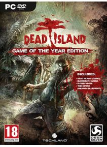

Dead Island este un joc video de RPG survival horror dezvoltat de Techland şi publicat de studioul german Deep Silver pentru Microsoft Windows, PlayStation 3 şi Xbox 360. Supravieţuitorii unei insule trebuie să facă faţă zombiilor infestaţi într-un open world în care se pune accentul pe luptă cu arme de apropiere. A fost iniţial anunţat la E3 2006, dar a fost lansat abia în 2011. Cel de-al doilea joc din serie, Dead Island: Riptide, a fost lansat în 2013.Concentrată pe provocarea de a supravieţui unei lumi deschise infestate cu zombie, cu un accent deosebit pe combaterea corpului şi artizanatul, complotul se concentrează asupra a patru supravieţuitori care pot juca, încercând să supravieţuiască şi să scape de insula fictivă Banoi.
Preţ : 51,00 €